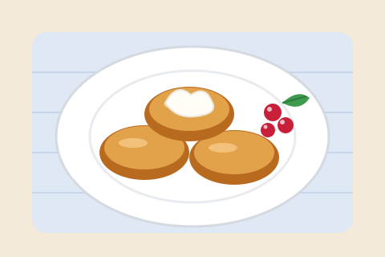
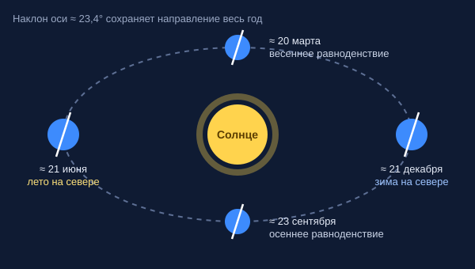

Информационная страница
Страница состоит из трёх разделов. Переходить между ними можно по ссылкам-закладкам над каждым разделом, а стрелками — сразу в начало или в конец страницы.
Сырники из творога

Ингредиенты (на 10–12 штук)
- Творог 5–9 % жирности — 400 г
- Яйцо куриное — 1 шт.
- Мука пшеничная —
4 ст. л.3 ст. л. и ещё немного для обваливания - Сахар — 2 ст. л.
- Сода (NaHCO3) — на кончике ножа
- Соль — щепотка
- Растительное масло для жарки
1 столовая ложка ≈ 15 см3.
Приготовление
- Разомните творог вилкой так, чтобы не осталось крупных комочков.
- Добавьте яйцо, сахар, соль и соду, перемешайте.
- Всыпьте муку и замесите мягкое тесто, которое не липнет к рукам.
- Скатайте шарики размером с грецкий орех, слегка расплющите и обваляйте в муке.
- Обжаривайте на среднем огне по 3–4 минуты с каждой стороны до румяной корочки.
С чем подавать
- Сметана
- Сладкое:
- варенье или джем
- мёд
- сгущённое молоко
- Свежие ягоды
Примечание. Слишком влажный творог лучше отжать через марлю, иначе понадобится больше муки, и сырники получатся плотными, а не нежными.
Времена года
Маркированный список времён года, внутри каждого — нумерованный список месяцев.
- Зима
- Декабрь
- Январь
- Февраль
- Весна
- Март
- Апрель
- Май
- Лето
- Июнь
- Июль
- Август
- Осень
- Сентябрь
- Октябрь
- Ноябрь
Это деление по календарю. Астрономические времена года начинаются в дни солнцестояний и равноденствий — о них в следующем разделе.
Почему меняются времена года
Многие думают, что летом Земля ближе к Солнцу, а зимой — дальше. На самом деле всё наоборот: ближе всего к Солнцу наша планета бывает в начале января, когда в Северном полушарии зима. Значит, дело не в расстоянии.
Наклон земной оси
Ось вращения Земли наклонена примерно на 23,4° и в течение года сохраняет своё направление в пространстве. Поэтому, двигаясь по орбите, Земля поворачивается к Солнцу то Северным, то Южным полушарием.

Положение Земли на орбите в дни солнцестояний и равноденствий.
Нажмите на схему, чтобы открыть её в полном размере.
Что меняется от наклона
- Высота Солнца над горизонтом. Чем выше Солнце, тем отвеснее падают лучи и тем сильнее они нагревают поверхность.
- Продолжительность дня. Летом день длиннее ночи, и земля успевает получить больше тепла.
Солнцестояния и равноденствия
Около 21 июня Северное полушарие сильнее всего наклонено к Солнцу — это летнее солнцестояние и самый длинный день в году. Около 21–22 декабря наступает зимнее солнцестояние и самый короткий день. Около 20 марта и 22–23 сентября проходят равноденствия: день и ночь почти равны по всей планете.
В Южном полушарии сезоны идут в обратном порядке: когда в Москве зима, в Австралии разгар лета.
Ближе к экватору Солнце весь год стоит высоко, поэтому смена сезонов там почти не ощущается по температуре — вместо зимы и лета говорят о сезонах дождей и засухи. А за полярным кругом наклон оси приводит к полярному дню и полярной ночи.